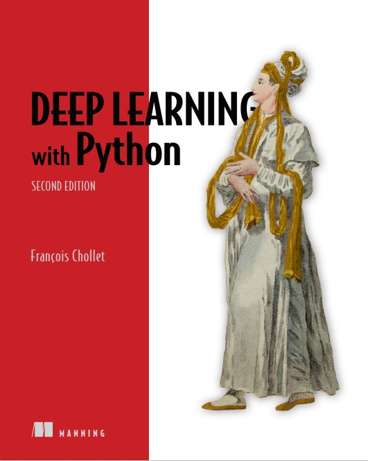
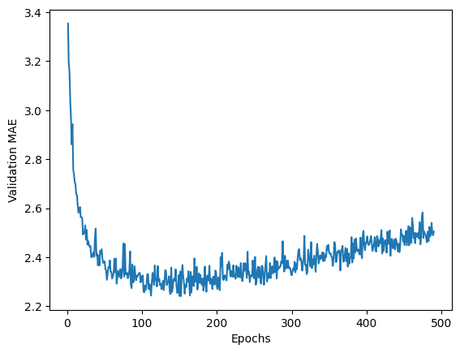
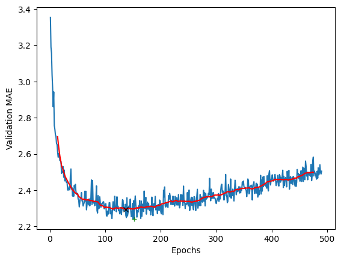
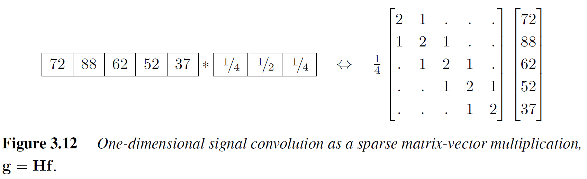
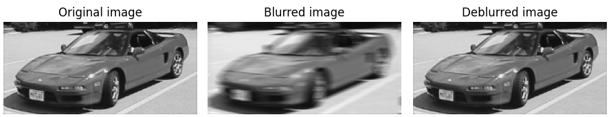
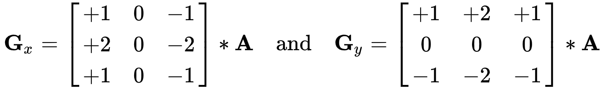
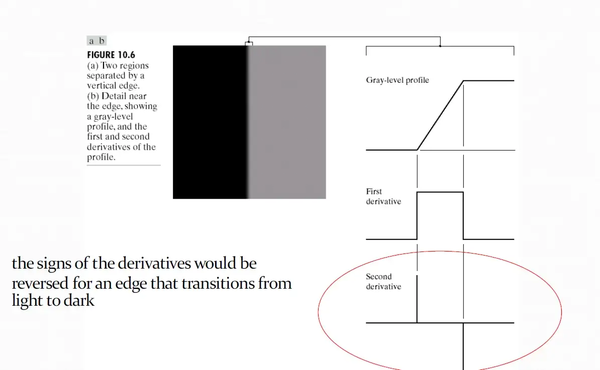
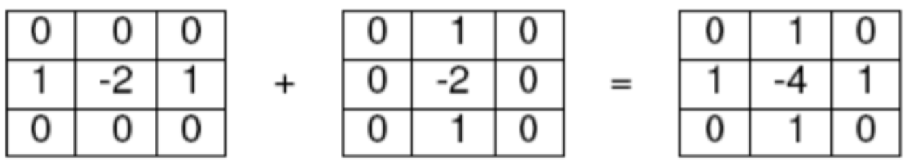

یادگیری عمیق
Deep Learning
Chapter 8: Introduction to Deep learning for Computer Vision
Mahmood Amintoosi
پاییز ۱۴۰۲
Source book
Deep Learning with Python,by: FRANÇOIS CHOLLET

https://www.manning.com/books/deep-learning-with-python-second-edition
LiveBook
Github: Jupyter Notebooks
Chapter 8
Introduction to deep learning for computer vision
This chapter covers:
- Understanding convolutional neural networks
- Using data augmentation to mitigate overfitting
- Using a pretrained convnet to do feature extraction
- Fine-tuning a pretrained convnet
Why Computer Vision is difficult?

How Computer see the above picture?

Mathematical definition of Convolution

Source: Wikipedia A good resource: Computational Foundations of Cognitive Science, Lecture 15: Convolutions and Kernels, School of Informatics University of Edinburgh
Zahedi, MSc Thesis: Framelet-based image inpainting and data recovery, Page 43
1D Convolution
The last plot in Chap. 4: 
Play with Convs & Filters
Convolution as Matrix Production
 Computer Vision Algorithms and Applications, Szeliski, Second Edition, 2021, Fig. 3.12, Page 122Finding x in min||Ax-b||
Run Python code in Colab|  |
Differentiation, Inner Product and Convolution
First derivative:h = [1,-1]
Check online convolution: g*h, when g = [5,8] or h*h Convolution demo
One of the edge detection operators is Prewitt filter:
| -1 | 0 | +1 |
| -1 | 0 | +1 |
| -1 | 0 | +1 |
Sobel Filter
If we define A as the source image, and Gx and Gy are two images which at each point contain the horizontal and vertical derivative approximations respectively, the computations are as follows (source wiki): 

See App_Image.ipynb or Run in Colab
 |
||
 |
Laplacian
The Laplace operator is a second-order differential operator in the n-dimensional Euclidean space, defined as the divergence ($\nabla \cdot$) of the gradient ($\nabla f$). Thus if $f$ is a twice-differentiable real-valued function, then the Laplacian of $f$ is the real-valued function defined by:$\Delta f=\nabla ^{2}f=\nabla \cdot \nabla f$

Laplacian
As we saw [-1,0,1] demonstrate Prewitt filter weights, which is a first order derivative; Convolving [-1,0,1] with your image basically computes the difference between the pixel values of the neighboring pixels. You apply 0 to the current pixel, 1 to the pixel on the right and -1 to the pixel on the left. This gives a first order difference:The Laplacian operator looks something like [1, -2, 1]. This computes the difference of differences. To see how, note that [1,-2,1] corresponds to:
(next-current) - (current-previous)
Now notice how this is a diference of differences. (next - current) is like a 1st derivative. (current - previous) is like 1st derivative. Their difference is like a 2nd derivative.
Adding these two kernels:

Laplacian
See App_Image.ipynb |
 |
Classification with CNNs
- English Digit Classification
- Persian Digit Classification
- Classifying Cats vs Dogs
8.1 - Introduction to convnets
MNIST Classification (Included with Keras)
Overall Model:

8.1 - Introduction to convnets
MNIST Classification, Sequential Model
from tensorflow import keras
from tensorflow.keras import layers
model = keras.Sequential()
model.add(layers.Conv2D(32, (5, 5), activation='relu', input_shape=(28, 28, 1)))
model.add(layers.MaxPooling2D((2, 2)))
model.add(layers.Conv2D(64, (5, 5), activation='relu'))
model.add(layers.MaxPooling2D((2, 2)))
model.add(layers.Flatten())
model.add(layers.Dense(64, activation='relu'))
model.add(layers.Dense(10, activation='softmax'))
Number of Parameters of Sequential Model
_________________________________________________________________ Layer (type) Output Shape Param # ================================================================= conv2d_6 (Conv2D) (None, 24, 24, 32) 832 max_pooling2d_2 (MaxPoolin (None, 12, 12, 32) 0 g2D) conv2d_7 (Conv2D) (None, 8, 8, 64) 51264 max_pooling2d_3 (MaxPoolin (None, 4, 4, 64) 0 g2D) flatten_2 (Flatten) (None, 1024) 0 dense_2 (Dense) (None, 64) 65600 dense_3 (Dense) (None, 10) 650 ================================================================= Total params: 118346 (462.29 KB) Trainable params: 118346 (462.29 KB) Non-trainable params: 0 (0.00 Byte) _________________________________________________________________
8.1 - Introduction to convnets
MNIST Classification, API Model
from tensorflow import keras
from tensorflow.keras import layers
inputs = keras.Input(shape=(28, 28, 1))
x = layers.Conv2D(filters=32, kernel_size=5, activation="relu")(inputs)
x = layers.MaxPooling2D(pool_size=2)(x)
x = layers.Conv2D(filters=64, kernel_size=5, activation="relu")(x)
x = layers.MaxPooling2D(pool_size=2)(x)
x = layers.Flatten()(x)
x = layers.Dense(64, activation="relu")(x)
outputs = layers.Dense(10, activation="softmax")(x)
model = keras.Model(inputs=inputs, outputs=outputs)
Number of Parameters of API Model
_________________________________________________________________ Layer (type) Output Shape Param # ================================================================= input_4 (InputLayer) [(None, 28, 28, 1)] 0 conv2d_10 (Conv2D) (None, 24, 24, 32) 832 max_pooling2d_6 (MaxPoolin (None, 12, 12, 32) 0 g2D) conv2d_11 (Conv2D) (None, 8, 8, 64) 51264 max_pooling2d_7 (MaxPoolin (None, 4, 4, 64) 0 g2D) flatten_4 (Flatten) (None, 1024) 0 dense_6 (Dense) (None, 64) 65600 dense_7 (Dense) (None, 10) 650 ================================================================= Total params: 118346 (462.29 KB) Trainable params: 118346 (462.29 KB) Non-trainable params: 0 (0.00 Byte) _________________________________________________________________
--
Persian Digits Classification (Not included with Keras)
import keras
from keras import layers
from keras import models
model = models.Sequential()
model.add(layers.Conv2D(32, (3, 3), activation='relu', input_shape=(28, 28, 1)))
model.add(layers.MaxPooling2D((2, 2)))
model.add(layers.Conv2D(64, (3, 3), activation='relu'))
model.add(layers.MaxPooling2D((2, 2)))
model.add(layers.Conv2D(64, (3, 3), activation='relu'))
model.add(layers.Flatten())
model.add(layers.Dense(64, activation='relu'))
model.add(layers.Dense(10, activation='softmax'))
8.2 - Training a convnet from scratch on a small dataset
Classify Dogs vs Cats (Not included with Keras)


8.2 - Training a convnet from scratch on a small dataset
Classify Dogs vs Cats (Building from scrach)
8.2 - Training a convnet from scratch on a small dataset
Classify Dogs vs Cats (Building from scrach)
model = models.Sequential()
model.add(layers.Conv2D(32, (3, 3), activation='relu',
input_shape=(150, 150, 3)))
model.add(layers.MaxPooling2D((2, 2)))
model.add(layers.Conv2D(64, (3, 3), activation='relu'))
model.add(layers.MaxPooling2D((2, 2)))
model.add(layers.Conv2D(128, (3, 3), activation='relu'))
model.add(layers.MaxPooling2D((2, 2)))
model.add(layers.Conv2D(128, (3, 3), activation='relu'))
model.add(layers.MaxPooling2D((2, 2)))
model.add(layers.Flatten())
model.add(layers.Dense(512, activation='relu'))
model.add(layers.Dense(1, activation='sigmoid'))
LeNet, AlexNet, VGGNet, GoogLeNet, ResNet, ZFNet


.jpg)
.jpg)
.jpg)
- Questions? -
m.amintoosi @ gmail.com
webpage : http://mamintoosi.ir
webpage in github : http://mamintoosi.github.io
github : mamintoosi